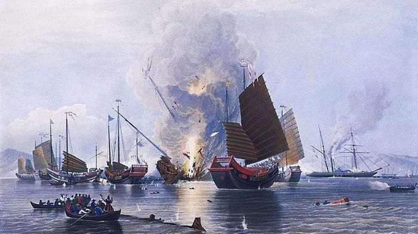

|
回目录 回主页 |
1764年，27岁的乔治·马戛尔尼作为英国的全权特使前往俄罗斯，与叶卡捷琳娜二世商谈结盟事宜。1775年，马戛尔尼出任加勒比群岛总督，被封为男爵；1792年，马戛尔尼返回英国，被加封为伯爵，并受命出使中国，以给乾隆祝寿名义前往北京协商中英贸易事宜，史称马戛尔尼使团。

1793年的8月，包括数学家，艺术家，医生等80多人的马戛尔尼使团抵达北京，使团中还有一位12岁的小男孩，是副使“斯当东”的儿子；在来华途中，“小斯当东”基本学会了汉语。
1793年9月14日（八月初十），乾隆正式接见使团。马戛尔尼代表英国政府提出了相关贸易请求，其中包括请中国允许英国商船在宁波和天津等处登岸经营商业，允许英国商人在北京设立洋行买卖货物，请于珠山（舟山）和广州附近各划一未经设防之小岛，供英商存放货物以及居留，还有英国商货自澳门运往广州，请特别优待赐予免税；如不能尽免，请依1782年之税率从宽减税，以及派遣驻中国使节等。 乾隆对中英贸易与互派使节根本不感兴趣，他觉得使团里面会说中文的西洋小男孩有点意思，就跟小斯当东说了几句，并随手将自己的一个荷包送给了小斯当东。 会面仪式结束后，期待贸易协商的马戛尔尼收到的却是觐见完毕离境返回的通知，无奈之中，马戛尔尼一行无功而返。 英国人原想通过这次访问把蒸汽机，织布机，榴弹炮，连发手枪等西方发明介绍给中国，哪知根本没人对这些感兴趣，英国人带来的600箱礼物都被堆进库房，闭门上锁了事。使团中有人这样描写来华的经历：“去时像要饭的一样被接待，停留时像囚犯一样被监禁，走时像防盗贼一样被送出来”。 1794年9月，马戛尔尼使团抵达英国朴次茅斯港，回国后，副使老斯当东将来华见闻记录成《英使谒见乾隆纪实》并于1797年公开出版。黑格尔在读过这本书后，对中国形成简明的看法：“那是一个神权专制政治的帝国……它翻来覆去只是一个雄伟的废墟而已……任何进步在那里都无法实现。” 1800年，20岁的“小斯当东”作为东印度公司的雇员再次来到中国；1801年的时候，“老斯当东”去世了，小斯当东承袭了他父亲的爵位。小斯当东在为东印度公司驻广州商馆工作的十几年里继续研究中国社会的政治与经济等诸多方面，他甚至不惜花费十年时间将《大清律例》翻译成英文；1810年，他在《爱丁堡评论》上发表《大清律例评论》，直接批评他的前辈们对中国的高估和犹豫不定。 1816年，英国再次派遣威廉·皮特·阿美士德勋爵出使中国，继续马戛尔尼使团没有完成的贸易使命，这一次“小斯当东”成为副使。由于中英双方在觐见程序问题以及阿美士德坚持不给嘉庆皇帝叩头等缘故，最后被嘉庆下令赶出北京。至此，彻底断绝了用和平方式建立中英贸易的机会。 后来，在没有正常贸易情况下产生的鸦片贸易导致满清原来的贸易顺差变成了逆差，从而使大量的白银外流；戊戌1838年，满清开始筹划禁烟。庚子1840年1月，满清宣布断绝中英贸易，让战争的到来加快了脚步。 1840年4月7日，在英国下议院就是否发动战争解决中英贸易问题的激烈辩论中，60岁的“小斯当东”以他对中国的多年了解向议会进行了关键表述。小斯当东说以他对这个民族统治阶层的了解，战争是不可避免的……当时全场一片肃静，都在倾听小斯当东的发言；最后，“小斯当东”坚定表示：“尽管令人遗憾，但这场战争是正义的，是必要的”。 三天后，英国下院以271票主战，262票反对，通过了采取军事行动的决议；随后，上议院也通过了这个决议。 1840年6月，40多艘英国舰船装载4000名英军士兵抵达广州珠江口外，其中战舰16艘，蒸汽军舰4艘，运输舰28艘；到1842年8月战争结束时，英军战舰达25艘，蒸汽舰船15艘，医疗船及运输船等共60余艘。 1842年8月29日，满清政府在英国军舰“汗华号”上签下了《南京条约》，不仅满足了当年马戛尔尼使团提出的全部贸易条件，还外加赔款2100万等其他条款以及割让了香港岛。 追本溯源，1840年英国对华战争，是在非常了解中国内情的英国贵族参与主导下发动的，他们非常准确地把握了满清不堪一击的时刻，轰开了满清封闭的大门。 来源：博客 作者：蒋祖权 |
回目录 回主页 |